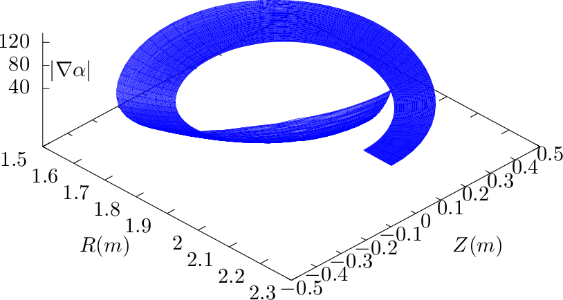
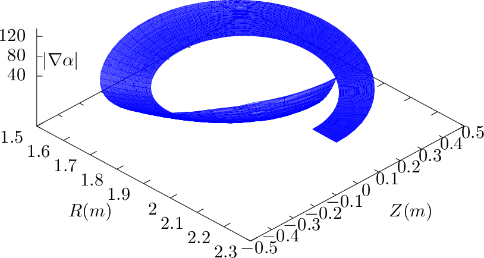
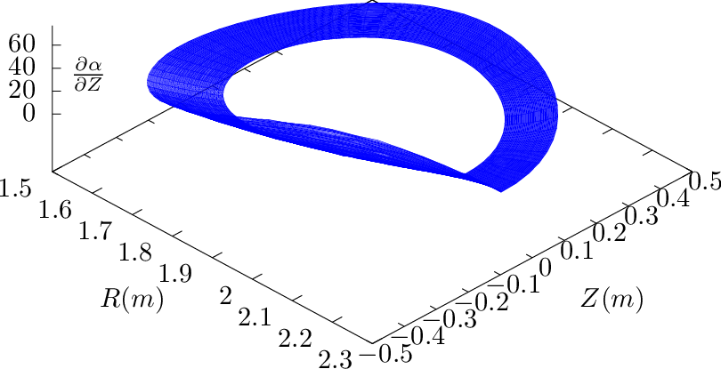
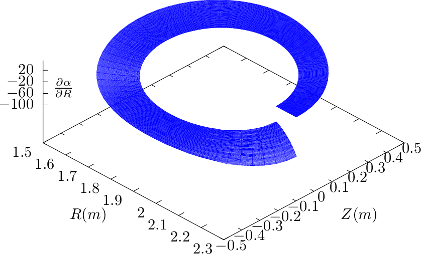

d𜃠= ∫
0𝜃B ⋅∇ϕ∕(B ⋅∇ğœƒ)d𝜃. The gradient of α is written as
d𜃠= ∫
0𝜃B ⋅∇ϕ∕(B ⋅∇ğœƒ)d𝜃. The gradient of α is written as
Next, let us calculate the gradient of the generalized toroidal angle α, which is deï¬ned by Eq. (299),
i.e., α = ϕ −δ, where δ = ∫
0𜃠d𜃠= ∫
0𝜃B ⋅∇ϕ∕(B ⋅∇ğœƒ)d𝜃. The gradient of α is written as


![( ) [ ˆ ( - - ) ( - - ) ]
∇ψ ⋅∇ α = − RZ ğœƒË†R + R-RğœƒË†Z â‹… ϕ- + ∂δ-R-Z𜃠− ∂δR-Zψ ˆR + ∂δR-R ψ − ∂-δR-R𜃠ˆZ
𝒥 𝒥 R ∂ψ 𒥠∂ğœƒğ’¥ ∂𝜃𝒥 ∂ψ 𝒥
R ( ∂δ R ∂δR ) R ( ∂δR ∂δ R )
= − 𝒥-Z𜃠∂ψ-𝒥-Z𜃠− ∂𝜃𝒥-Zψ + 𝒥-R 𜃠∂ğœƒğ’¥-Rψ − ∂ψ-𝒥-R𜃠. (303)](tokamak_equilibrium395x.png)
![[ ]
ϕˆ ( ∂δ R ∂δR ) ( ∂δR ∂ δR ) ( R R )
∇α ⋅∇ 𜃠= R- + ∂ψ-𝒥-Z𜃠− ∂𝜃𝒥-Zψ ˆR + ∂𝜃𝒥-R ψ − ∂ψ-𝒥-R𜃠ˆZ. â‹… 𝒥-ZψRˆ− 𝒥 R ψˆZ
( - - ) ( - - )
∂δ-R- ∂δ-R- R- ∂δ-R- ∂δ-R- R-
= ∂ψ 𒥠Z 𜃠− ∂𜃠𒥠Zψ 𒥠Zψ − ∂𜃠𒥠Rψ − ∂ψ 𒥠R𜃠𒥠Rψ. (304)](tokamak_equilibrium396x.png)
Â
Â


 

Â
 
Â